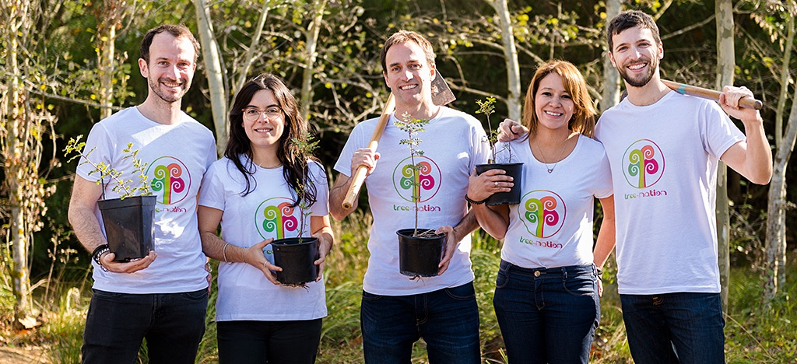

How The World Is Creating Sustainable Forests
To Fight Climate Change
The rising threat of climate change has changed many things and has
forced many sustainable forest projects around the World. This website
gives you an overview of some of these projects.
 [1][2][3]
[1][2][3]
What is Climate Change?
Climate change is the change in usual weather in a place. Long-term
temperature changes and different weather patterns are the main reasons
why climate change has even into existence. Throughout history, Earth’s
climate has changed and is always changing. In some centuries it was warmer
and in some centuries it was colder. But recently Earth’s natural climate
change is not the only reason to blame for these changes. Human activities
have been a major cause of this as well as many of these activities
create greenhouse gas emissions which heat up the planet. The average
global temperature has increased by 1 degree Fahrenheit in the past
100 years. Activities like burning fossil fuels, coal, oil, gas,
manufacturing goods and deforestation are all contributors to climate
change. Many human daily activities like cooking food and driving
cars all produce gas which is left to go up into the atmosphere.
The melting glaciers and rising sea levels are current results of
climate change which can be seen today. Other consequences include
flooding, an increase in natural disasters, water scarcity and fires.
Something must be done about this, otherwise, it might get much worse.
Some places might start getting extremely hot/cold weather than
usual. Due to all this, some initiatives have been taken all around
the world in order to battle climate change. One big initiative is
to create sustainable forests as this can help decrease CO2 levels
in the world.
 [9]
[9]
Pakistan's Ten Billion Tree Tsunami Project
In 2019, Pakistan launched a Ten Billion Tree Tsunami Project to fight
climate change. The goal of this project is to plant 10 billion trees by
2023 and it was proposed to increase ecosystem restoration, wildlife resources
and revive old woodland. This will help develop sustainable forests,
fight climate change and many environmentally friendly jobs will be
created. Pakistan has been rated as the world’s fifth country most
affected by extreme weather due to climate change. It has caused many
issues like heavy monsoon seasons, melting Himalayan glaciers,
reduced hydropower, extreme heat and flooding, forests are a major
way to cope with all these issues.
So far the project has planted
over 2 billion trees across 10,000 sites. The natural capital in
the country was decreasing up until this project but it is now
increasing. Over 1.36 million acres have been covered with trees
and this number is increasing every day. Pollution has decreased
as air quality has improved and there is more control over pollution.
Furthermore, this project has slowed down the rise of greenhouse
gases as trees absorb these emissions and remove tons of carbon
from the atmosphere and even improved water quality. Shown on
the below are two pictures which show a before and after of an area in the Ten
Billion Tree Tsunami Project.
[4][5]
Tree-Nation
[7]
Tree-Nation is a non-profit organization which promotes tree planting
projects around the world. Their main goal is to fight climate change
with reforestation. Tree-Nation’s website states that “Trees are key
pillars of the world for both humans and the environment. They benefit
us by purifying water, air and creating better social conditions.
They benefit the environment by providing homes for various forms of
life, cooling our climate and improving our soil” [6]. The organization
uses funds to gather and coordinate people from anywhere in the world to
plant trees and try to reforest many areas. This initiative has planted over
22 million trees with 94 reforestation projects worldwide. Around 20000
hectares of land has been reforested with the help of more than
440000 people and 10388 companies. The organization believes that its
efforts will improve water quality and supply, air quality, decrease CO2
in the atmosphere and ultimately decrease climate change.
Tree Canada
[8]
Tree Canada is a non-profit organization that started in 1982 which
promotes the planting of trees all over Canada. They strive to restore
forests to help fight climate change in order for cleaner soil, cleaner
waterways, shorelines and to decrease carbon pollution. Since the creation
of this effort, the organization has planted over 84 million trees all
over Canada. Furthermore, they also aim to plant trees in urban areas
like schoolyards and housing communities. So far they have made this
positive impact on more than 700 Canadian communities. They target natural
areas where human activity has had a negative impact and where trees have
been cut down and also new areas to create new forests. Also, if a natural
disaster occurs, Tree Canada is there to help restore any environmental
damage as shown above. Ice storms hit Ontario and Quebec and Tree
Canada took the initiative to lead the green disaster relief The organization
also has a Grow Clean air program which encourages individuals and
businesses to lessen their impact on the environment by finding
environmentally friendly options to do their work.